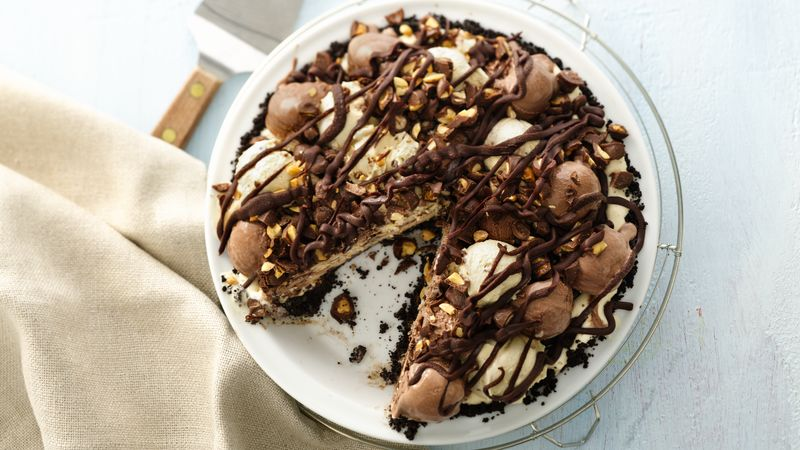

Peanut butter ice cream pie
For the peanut butter lovers in our family!

Ingredients
- 9 graham crackers, crushed
- ¾ cup salted peanuts, finely chopped
- ¼ cup white sugar
- ¼ cup butter, melted
- 1 quart vanilla ice cream, softened
- ½ cup crunchy peanut butter
- ¼ cup chopped salted peanuts
Directions
- Preheat oven to 375 degrees F (190 degrees C).
- In a small bowl, mix together crushed graham crackers, 3/4 cup finely chopped peanuts, and sugar. Stir in melted butter or margarine. Press mixture into a 9 inch pie plate.
- Bake crust in preheated oven for 8 minutes. Chill.
- In a medium mixing bowl, mix ice cream and peanut butter together on medium-low speed until combined. Pour mixture into chilled crust. Sprinkle with 1/4 cup chopped peanuts. Freeze for at least 6 hours. Remove from freezer 10 minutes before serving.
Nutrition facts
Per serving: 476 calories; protein 11.7g; carbohydrates 41.3g; fat 31.7g; cholesterol 44.3mg; sodium 415.7mg.
Back to home page